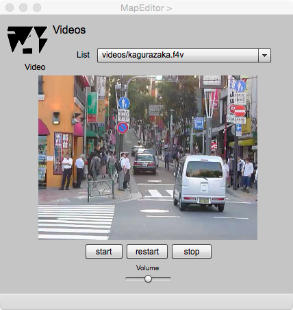

VideoViewer
映像ビュアー
このページは，Editor ページとの連携のもとで，地物や関連を動画として示す属性の取得と編集を行うためにあります．gittok では，地物は，動画を保存している場所を属性とします．ここではまず，動画の保存場所を，gittokはどのように扱うか説明し，次に，このページの操作手順を説明します．最後に表示欄とボタンそれぞれについて，説明します．
動画の保存場所
動画の保存場所は， URL で表現します．その場所は，作業用フォルダーの下にvideoというフォルダーを設け，そこにまとめて保存しておくことをお勧めします．そうすればデータの交換が容易になります．動画ファイルはフラッシュビデオ形式 (f4v, mp4など）でなければいけません．
gittok はこのURLから動画を取り出して，Video Viewer上で見られるようにします．
操作画面

表示欄
Video呼び出された動画ファイルの名前が表示される．
ボタン
open
このボタンを押して，呼び出す動画ファイルを選択する．
play
動画の再生を開始する．
pause
再生している動画を一次停止する．
stop
動画の再生を終了する．
Volume
動画の音量を調節する．
日本語
今あなたが読んでいるドキュメントが表示されます．
English
You can read the tutorial written in English.